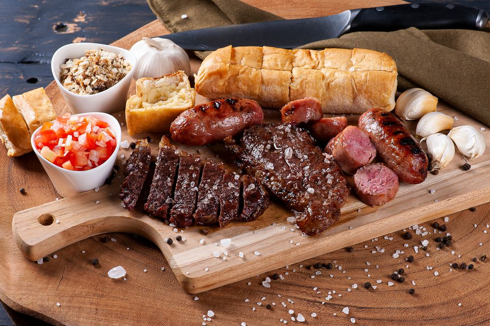

Minhas comidas favoritas
Nesta página trago algumas das minhas comidas favoritas
Uma pessoa que adoraria comer junto alguma dessas comidas
seria o grande neurocientista Alvaro Machado

Churrasco Facíl
Churrasco é o prato feito à base de carne in natura ou processada, assada sobre fogo ou brasas,
com a utilização de estacas de madeira ou metal, ou de grelhas.
Ingredientes:
- Um bom pedaço de carne bovina, que pode ser costela, picanha ou etc ...
- Sal grosso a gosto
- Um ou vários espetos
- Fogo de lenha, de gás, carvão
Modo de fazer:
- Espetar de pedaço a pedaço no espeto, passar o sal e colocar no fogo. Mais ou menos
- Se houver pressa ou muita fome, come-se somente chamuscada, meio a meio,
correndo sangue (como eu gosto).
Sushi
Sushi é um prato da culinária japonesa que possui origem numa antiga técnica de
conservação da carne de peixe em arroz avinagrado.
Ingredientes:
- 100 ml de vinagre de arroz
- 1 colher de sopa de açúcar
- 1 colher de chá de sal
- 50 ml de água
- 1 xícara de chá de arroz japonês
- 2 xícaras de chá de água
- 1 folha de alga cortada em retângulo
- salmão cru para rechear
Modo de fazer:
- Misture os ingredientes do vinagre e ferva. Reserve.
Cozinhe o arroz. Assim que estiver pronto
e ainda quente, jogue o vinagre sobre ele para temperar.
Esfrie com um leque ou tampa de plástico, misturando bem, para dar brilho. - Espalhe o arroz na folha retangular de alga, sobre o sudarê
(esteirinha especial para enrolar o sushi). Não deixe que o arroz
fique muito alto e abra espaço de 1 cm na borda, para fixar.
Coloque fatias de salmão no centro e enrole a alga,
passando água na borda, para colar. Corte em oito unidades.

Lasanha à bolanhesa
Lasanha é tanto um tipo de massa alimentícia formada por fitas largas, como também um prato,
por vezes chamado lasanha ao forno,
feito com essas fitas colocadas em camadas, e entremeadas com recheio e molho.
Ingredientes:
- 500 g de massa de lasanha
- 500 g de carne moída
- 500 g de presunto
- 500 g de mussarela
- sal a gosto
- 1 cebola ralada
- 3 colheres de óleo
- 1 caixa de molho de tomate
- 3 dentes de alho amassados
- 1 pacote de queijo ralado
Modo de fazer:
- Cozinhe a massa segundo as orientações do fabricante, despeje em um refratário
com água gelada para não grudar e reserve. - Refogue o alho, a cebola, a carne moída, o molho de tomate, deixe cozinhar por
3 minutos e reserve. - Espetar de pedaço a pedaço no espeto, passar o sal e colocar no fogo.